核心界面
整体布局与日常入口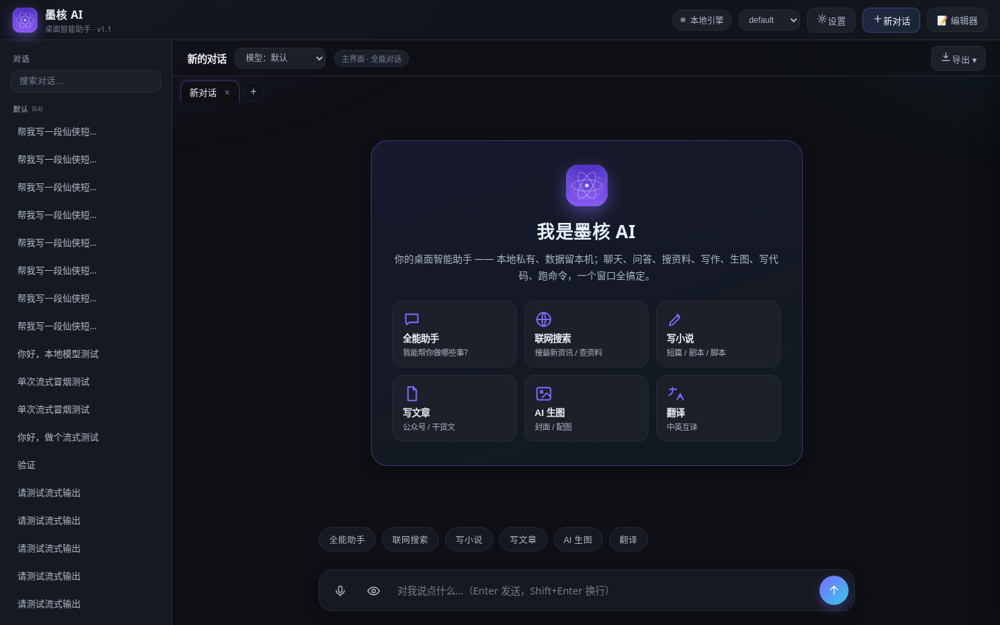
左侧会话列表，中间对话流，右侧可收起的功能抽屉。输入框上方是快捷 chip，直接点「AI 生图」「联网搜索」等即可切换意图，不用再单独开面板。
模型与设置
10 家供应商 · 本地模型 · Key 管理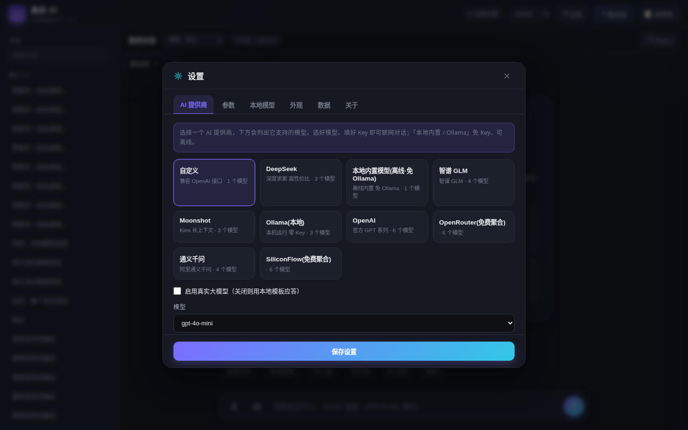
弹窗式 tab 设置，一屏切换 10 家供应商。每家的 API Key 独立保存，来回切换不会互相覆盖，换回来时自动回填上次填过的 Key。
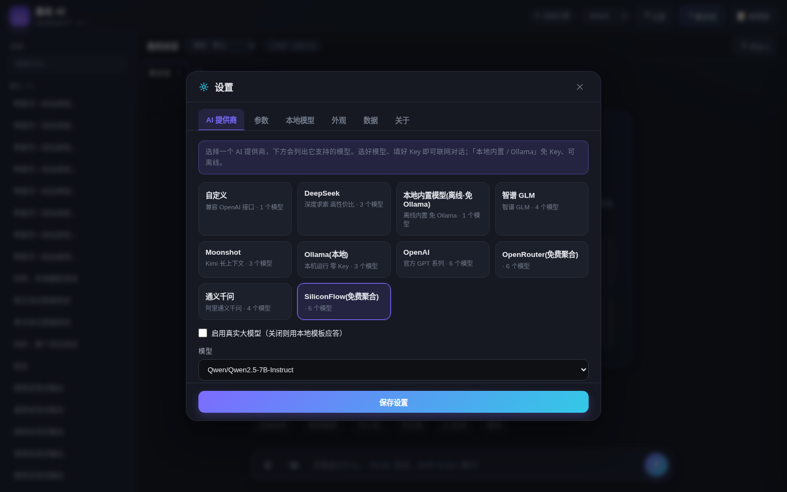
新增两家聚合平台，注册即送额度，适合零成本先跑起来。模型下拉里已预置 Qwen2.5、GLM、gpt-4o-mini 等常用型号。

勾上「继承主模型 Key」，生图和视觉理解就直接复用对话模型的 Key 和 Base URL，省掉重复三遍填同一串密钥的折磨。
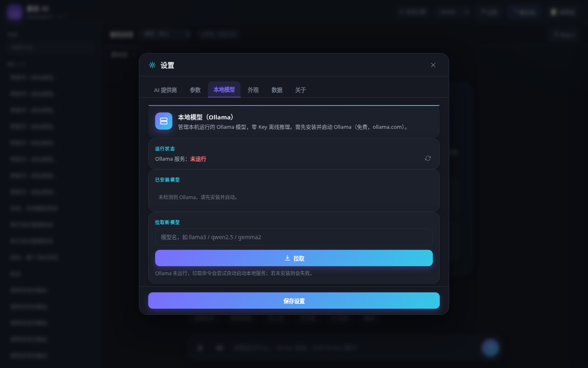
Ollama 从独立面板挪进了设置页，作为「本地模型」tab。可刷新已装模型列表、一键切换为当前对话模型、删除不用的权重。
工作面板 · 全屏
终端 / 代码 / Agent / 知识库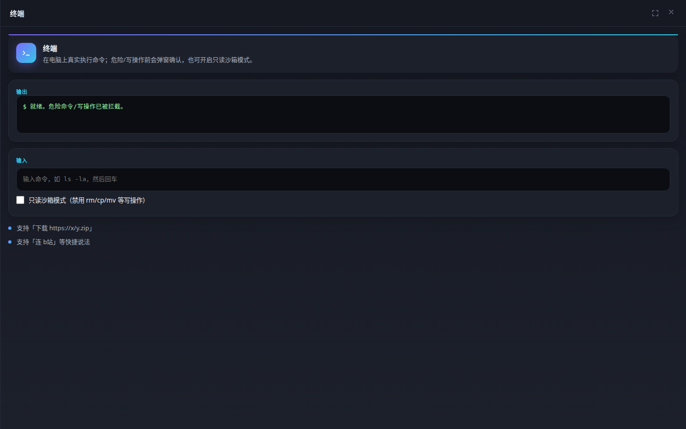
点面板右上角的最大化按钮，抽屉铺满整个聊天区。终端这类需要看长输出的场景，400px 抽屉实在不够用。
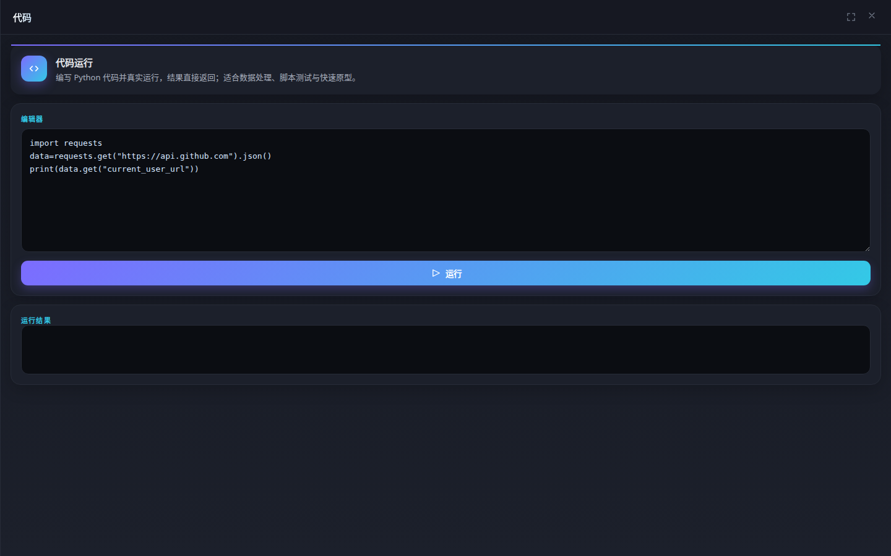
在对话里说「帮我写个冒泡排序并运行」，后端识别意图后直接生成代码、自动打开代码面板、自动填入、自动全屏。不用手动复制粘贴。
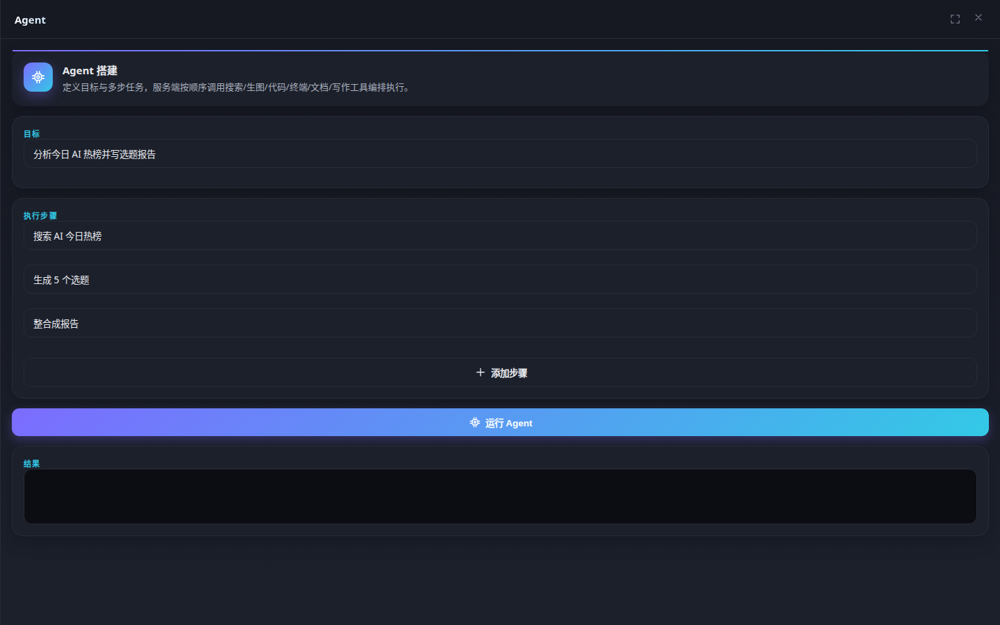
对话中描述目标，模型自动拆成可执行步骤列表并推进。同样支持从聊天直接唤起并铺满全屏。
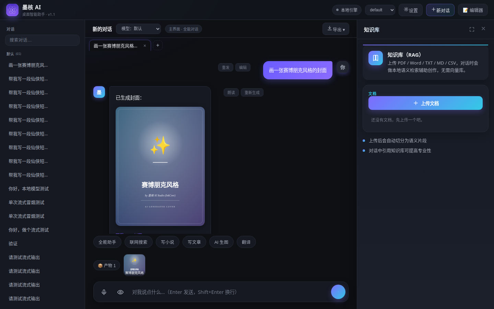
上传文档后建立本地索引，对话时自动检索相关片段作为上下文。文件不出本机，检索也在本地完成。
玩法与技能
内置玩法 · 自建导入 · 技能卡片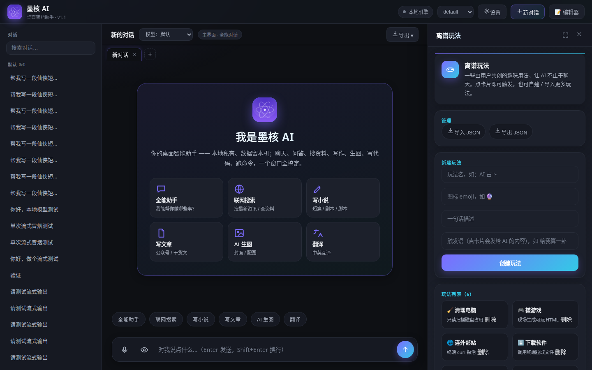
内置 6 个预设玩法（毒舌吐槽、废话生成器、赛博算命等）。面板同样支持全屏，长文本输出看得清。
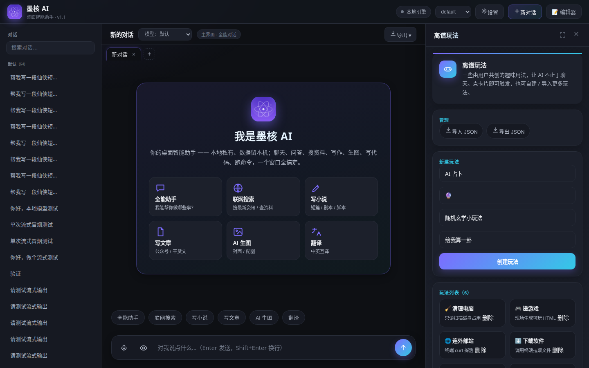
自己写 prompt 就能新建玩法，存进本地 funs.json。支持整包导出 JSON 分享给别人，也能导入别人的玩法包。
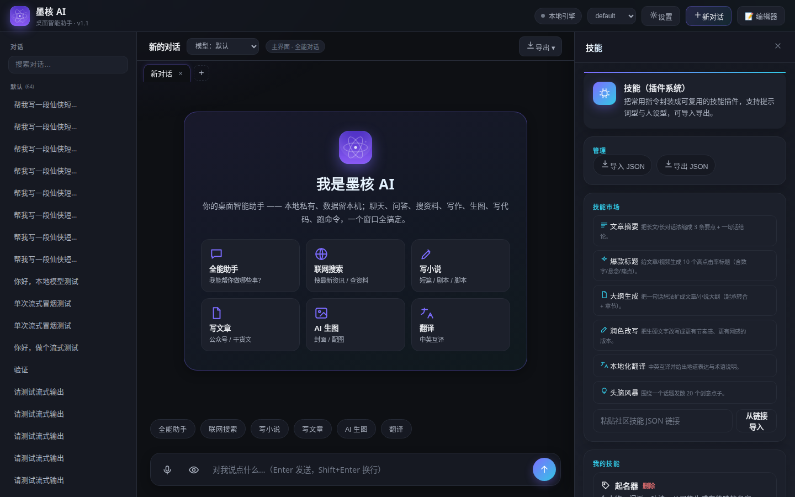
把常用能力做成可点即用的卡片：文案改写、翻译、总结、表格提取等。技能只做触发，结果回落到对话流里，不额外占屏。
记忆与产物
空状态引导 · 会话产物留痕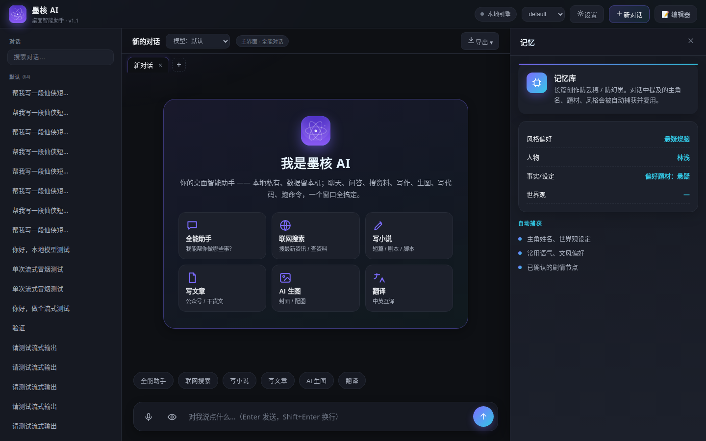
面板没内容时不再是一片空白，改为给出说明和下一步动作提示，新用户不至于打开就懵。所有功能面板都做了这套空状态。
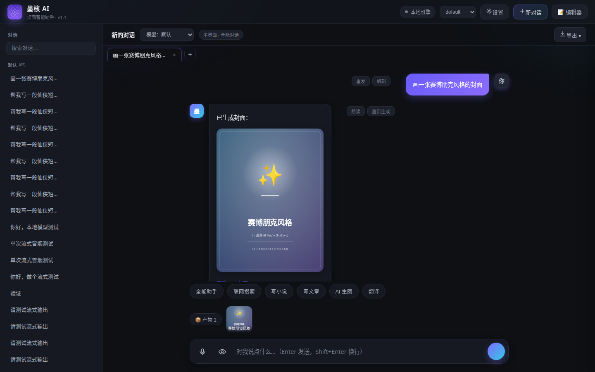
本次会话生成过的图片、小游戏等产物，以缩略图形式钉在输入框上方，点一下就能重新打开，不用往上翻聊天记录找。可折叠收起。
本次更新
v1.0.0 · 共 10 项改动- 面板宽度统一 400px删掉了 340/392 的分档逻辑，所有抽屉一个宽度，视觉不再跳动。
- 全屏覆盖按钮知识库 / 终端 / 代码 / Agent / 离谱玩法 五个工作型面板支持一键铺满聊天区。
- 聊天自动唤起面板说「写段代码并运行」，自动生成 + 自动填入 + 自动全屏，Agent 与终端同理。
- 离谱玩法自建新建 / 删除 / 导出 JSON / 导入 JSON，玩法可以自己攒也可以互相分享。
- 每供应商独立记 Key切换供应商不再冲掉上一家的密钥，切回来自动回填。
- 新增免费聚合供应商SiliconFlow 与 OpenRouter，注册送额度，零成本起步。
- 继承 Key 到生图 / 视觉一个勾选框省掉两次重复填写。
- 面板空状态引导空面板不再是白板，给出说明与下一步提示。
- 会话产物条生成过的图片 / 小游戏钉在输入框上方，点开即回看。
- Ollama 并入设置本地模型作为设置页的一个 tab，不再单占一个功能位。
安装方式
三选一，推荐第一种① 安装版 exe
- 点上方「下载安装版」，拿到
InkCore-Setup.exe - 双击运行，一路下一步
- 桌面出现「墨核 AI Studio」图标，双击启动
- 首次进入先到设置里填一个模型 API Key
Windows 可能提示「未知发布者」，点「更多信息 → 仍要运行」即可（未做代码签名）。
② 免安装 ZIP
- 下载
InkCore-win.zip - 解压到任意目录（路径别带中文最稳）
- 双击里面的
InkCore.exe
不写注册表，删目录即卸载。适合放 U 盘或公司电脑。
③ 源码运行
需要 Python 3.11+：
git clone https://github.com/wxadxmyz/InkCore.git
cd InkCore
pip install -r requirements.txt
python desktop_app.py只想开网页版就跑 python app.py，浏览器访问 http://127.0.0.1:7860。